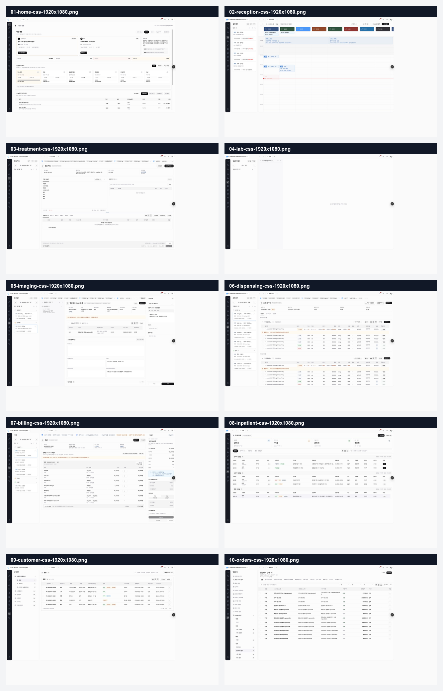

1920x1080 데스크탑 Product Design 감사
CLAiR EMR 스테이징 주요 모듈 10개를 병원 데스크탑 기준인 CSS viewport 1920x1080으로 캡처해 앱 셸, 모듈 패널, 테이블 밀도, 상태/액션 affordance를 점검했다. 이번 작업은 구현이 아니라 후속 PR 후보를 선명하게 만들기 위한 감사다.
전반적으로 CDS.V2 앱 셸 방향은 유지되고 있으며 좌측 네비게이션과 모듈 패널은 안정적으로 보인다. 다만 1920 화면의 넓이를 충분히 업무 밀도로 활용하지 못하는 화면, 빈 상태가 너무 약한 화면, 그리고 테이블 툴바/상태/액션 affordance가 화면마다 평평하게 보이는 문제가 남아 있다.
감사 기준
baseline 병원 데스크탑 모니터 환경,
CSS viewport 1920x1080.
- 대상 URL:
https://emr-app-shell-prototype-iirqb0hlu-mcso0s-projects.vercel.app/w/clair-demo/orders?modulePanel=open - 기준 문서:
docs/design/system/DESIGN.md,docs/design/qa/core-workspace-ui-review-checklist.md - 컴포넌트 기준:
src/components/emr,src/components/ui,src/shell - 토큰 기준:
src/styles/tokens/clair.css,src/styles/tokens/emr-foundation.css,src/styles/tokens/shadcn.css
증거
캡처 폴더:
output/product-design-audit-2026-06-03-den-410/screenshots-css-1920x1080/
메타데이터:
output/product-design-audit-2026-06-03-den-410/screenshot-css-1920x1080-metadata.json
에서 10개 캡처 모두 CSS viewport 1920x1080을 확인했다.
PNG bitmap은 브라우저 배율 때문에 2400x1350으로 저장되지만
실제 CSS viewport 기준은 1920x1080이다.

화면별 상태
| Step | 화면 | 건강도 | 감사 메모 |
|---|---|---|---|
| 01 | 홈 | 양호 | 업무 카드와 테이블이 1920 화면에서 안정적이다. 다만 카드와 표의 시각 위계가 비슷해 가장 급한 작업의 우선순위가 더 강하게 드러나면 좋다. |
| 02 | 접수/예약 | 양호 | 좌측 대기열과 캘린더가 데스크탑 기준에 잘 맞는다. 일정 카드와 상단 doctor lane은 좋지만, 긴 가로 캘린더에서 현재 시각/선택 상태가 더 강하게 읽히면 좋다. |
| 03 | 진료/차트 | 주의 | 잘리지는 않지만 상단/좌측에 업무가 몰리고 하단 여백이 크다. SOAP, 진단, 오더 영역의 높이 배분이 데스크탑 생산성에 비해 보수적이다. |
| 04 | 임상병리검사 | 주의 | 대기열 0건 상태에서 중앙 빈 상태 메시지가 약하고 다음 행동이 없다. 1920 화면 대부분이 비어 있어 병원 업무 화면으로는 정보 밀도가 낮다. |
| 05 | 영상검사 | 양호 | 좌측 queue, 중앙 결과, 우측 패널 구성이 명확하다. 경고성 안내와 우측 보조 정보가 잘 보이지만, 본문 입력/결과 영역의 세로 흐름은 약간 평평하다. |
| 06 | 조제/처치 | 양호 | 테이블 밀도와 그룹 구성이 데스크탑 환경에 잘 맞는다. 다만 반복 테이블 row의 경고/상태/작업 버튼 대비가 작아 장시간 운영 시 스캔 피로가 생길 수 있다. |
| 07 | 수납 | 주의 | 멀티패널 구성은 좋지만 금액, 상태, 결제 수단, CTA가 모두 낮은 대비로 쌓여 있다. 최종 수납 단계의 주요 CTA와 미지원/미연동 상태가 더 명확해야 한다. |
| 08 | 입원 | 양호 | 상단 요약과 표가 안정적이다. 넓은 화면에서 ward board 밀도는 괜찮지만 행 action과 상태 badge affordance는 다른 테이블 화면과 통합 점검이 필요하다. |
| 09 | 고객관리 | 양호 | 모듈 리스트 패널과 테이블이 정돈되어 있다. 상단 검색/필터/행 작업의 시각 체계는 병원관리 테이블과 같은 공통 규칙으로 묶는 것이 좋다. |
| 10 | 병원관리 | 양호 | 카탈로그 화면은 1920 기준에 가장 안정적이다. 다만 카테고리 패널, 탭, 검색, select, density, filter, row action이 한 줄에 많아 툴바 위계 정리가 필요하다. |
핵심 발견
- 데스크탑 밀도 사용률이 화면마다 다르다. 병원관리, 조제/처치, 수납은 데스크탑 밀도를 잘 쓰지만 차트와 Lab은 넓은 화면에서 빈 공간이 크다.
- 빈 상태가 업무 행동으로 연결되지 않는다. Lab 대기열 0건 화면은 "선택해 주세요"만 남아 있어 다음 행동, 필터 초기화, 오늘 업무 없음, 샘플 생성 같은 의미가 부족하다.
- 테이블 toolbar/header affordance가 약하다. 검색, select, view density, filter, row action이 여러 화면에서 반복되지만 우선순위와 활성 상태가 충분히 분리되어 보이지 않는다.
- 금액/상태/최종 CTA 화면은 더 강한 시각 위계가 필요하다. 수납은 임상 정보보다 결제 판단이 중요한 화면인데, 최종 수납 CTA와 미지원/미연동/대기 상태가 다소 묻혀 있다.
- 접근성 리스크는 주로 icon-only, 낮은 대비, 상태 색상 의존에 있다. 스크린샷만으로 접근성 준수를 판정할 수는 없지만, row action, density/filter icon, floating action은 키보드 focus와 accessible name 확인이 필요하다.
추천 후속 PR 후보
-
Lab empty-state and queue-zero guidance polish
임상병리검사 0건/미선택 상태를 업무 안내와 다음 행동이 있는 EMR empty-state 패턴으로 정리한다. -
Desktop chart workspace vertical density pass
진료/차트의 SOAP, 진단, 오더 영역 높이 배분과 하단 여백을 1920 기준으로 재조정한다. -
Shared table toolbar and header affordance audit
고객관리, 병원관리, 입원, 조제/처치의 검색/필터/density/row action control 위계를 공통 규칙으로 정리한다. -
Billing final-action hierarchy polish
수납 화면의 금액 요약, 미지원/미연동 상태, 결제 수단, 최종 CTA의 시각 우선순위를 정리한다. -
Desktop screenshot regression seed pack
이번 10개 캡처를 기준으로 app-shell/module-panel/table regression 후보 세트를 정리한다. 자동화는 별도 범위로 둔다.
검증 결과와 한계
- 통과: 10개 화면 모두 CSS viewport
1920x1080으로 캡처됨. - 통과: contact sheet에서 좌측 nav rail과 주요 모듈 패널이 잘리지 않음.
- 한계: 이번 감사는 스크린샷과 DOM snapshot 기반이다. 키보드 탐색, focus ring, popover/dialog 동작, 실제 스크롤 경계는 후속 이슈에서 상호작용 테스트가 필요하다.
- 한계: live DB/API, RLS, 실데이터, 프로덕션 배포는 범위 밖이다.